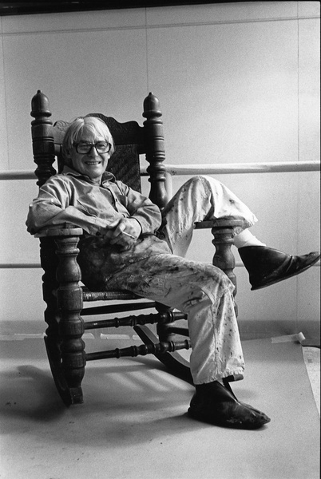

Interchange is an abstract expressionist painting by Willem de Kooning. It is an oil painting that measures 79 by 69 inches, and it was finished in 1955. The painting shows a pink mass in the center, which is supposed to represent a woman seated on a chair, surrounded by various colors.
Interchange was the abstract painting that made Willem de Kooning famous and known best as an expressionist painter. It was the start of Kooning’s transition from painting women to painting abstract landscapes. However, this painting was still influenced by de Kooning’s Women series, which were less abstract depictions of women.
Shortly after Interchange was finished, Willem de Kooning sold it to Edgar Kaufmann Jr. for just $4,000. Three months after a judge declared de Kooning mentally incompetent due to his Alzheimer’s, Kaufmann sold Interchange for to Shigeki Kameyama for $20.7 million in 1989. The painting was sold shortly after to David Geffen, and the value kept rising after that due to the fact that de Kooning couldn’t make similar paintings anymore. In 2015, Geffen sold the painting to Ken Griffin for $300 million, which made it the most expensive painting in the world at the time. It was sold along with Jackson Pollock’s Number 17A in a 500 million dollar deal. Today, Interchange holds the record for the 2nd highest price a painting has ever sold for, and it is the most expensive abstract painting in the world.